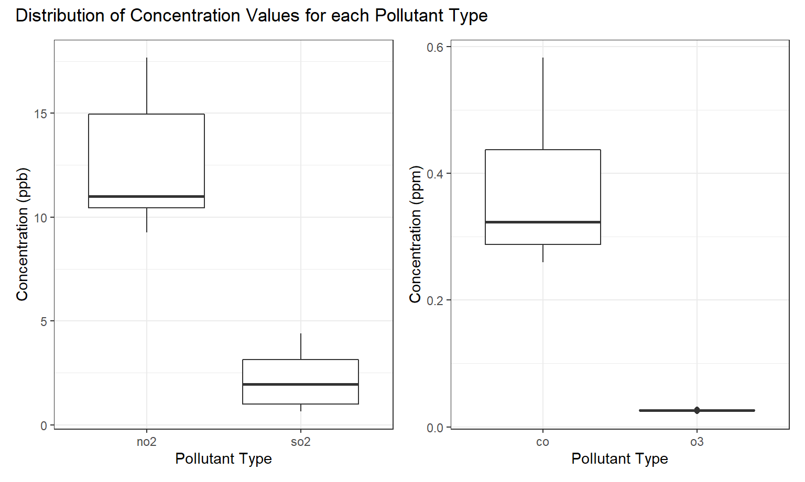
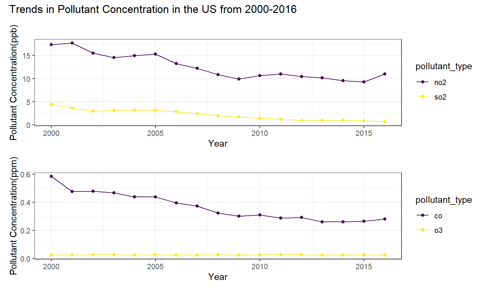
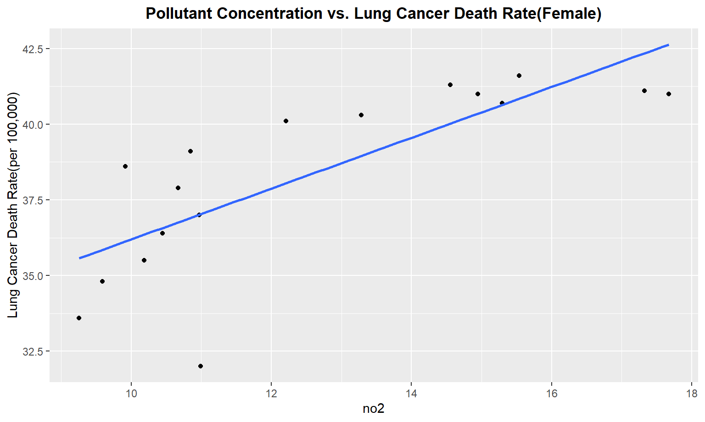
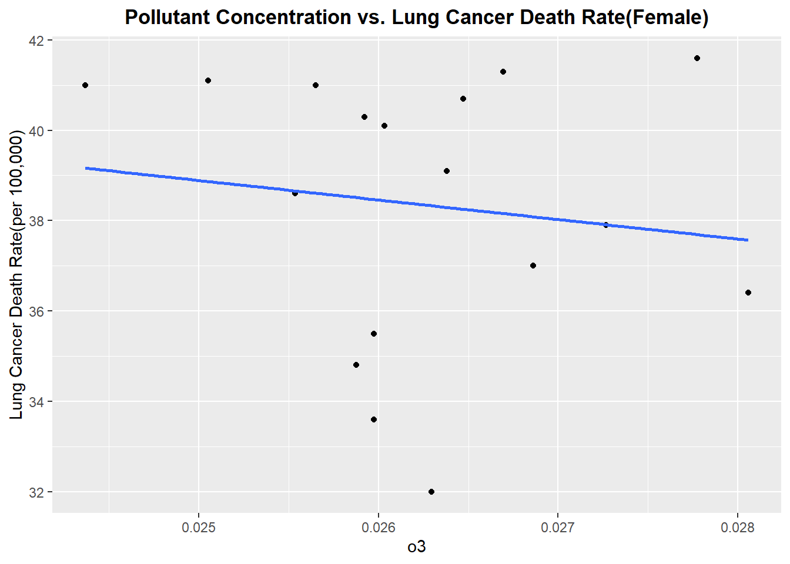
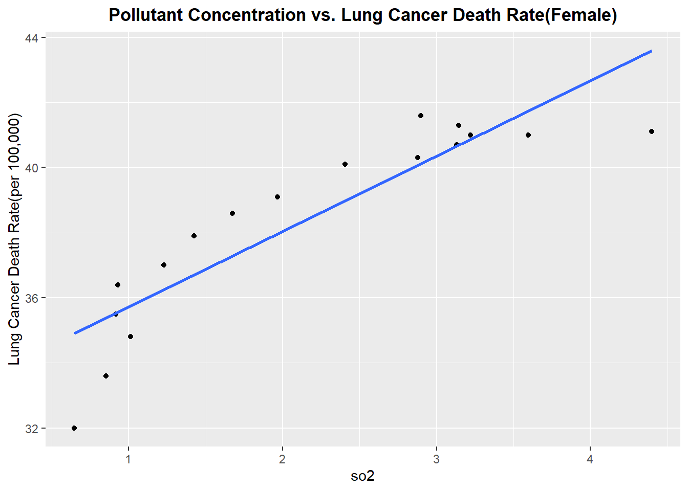
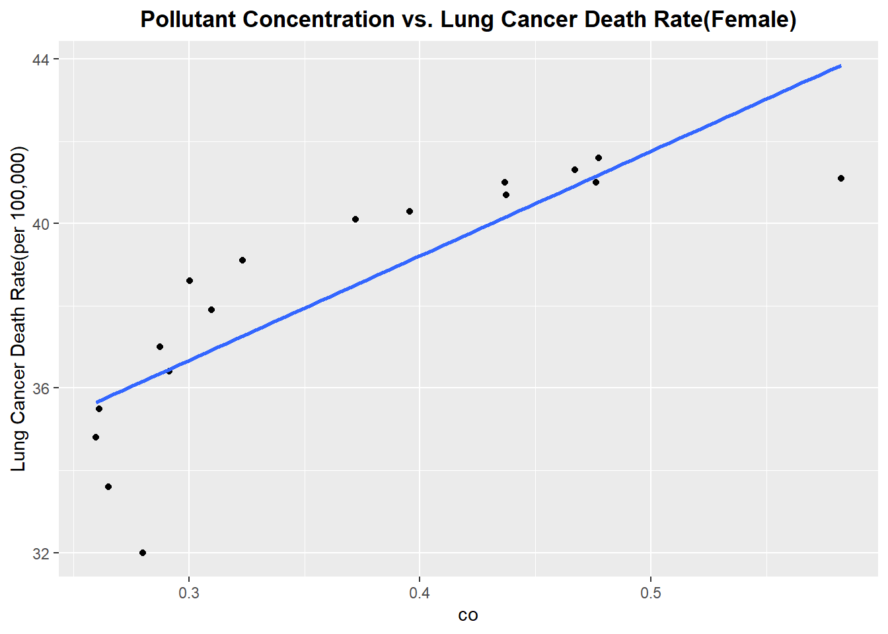
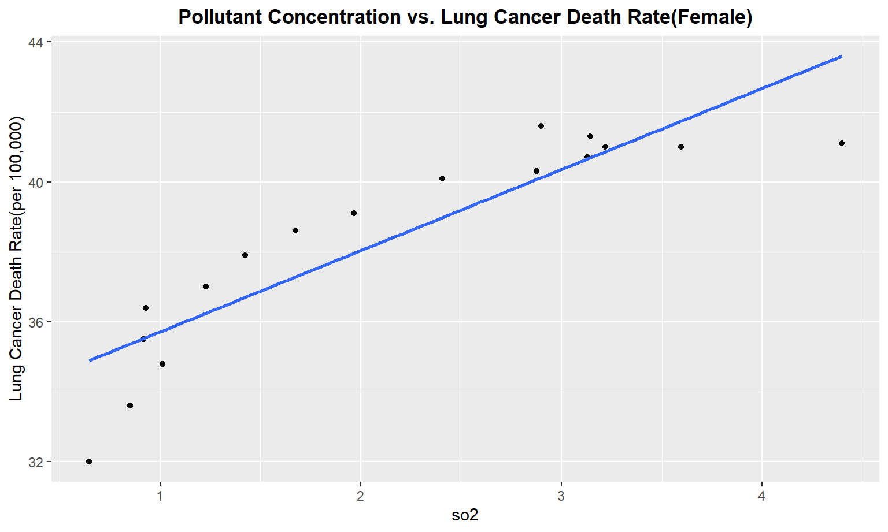
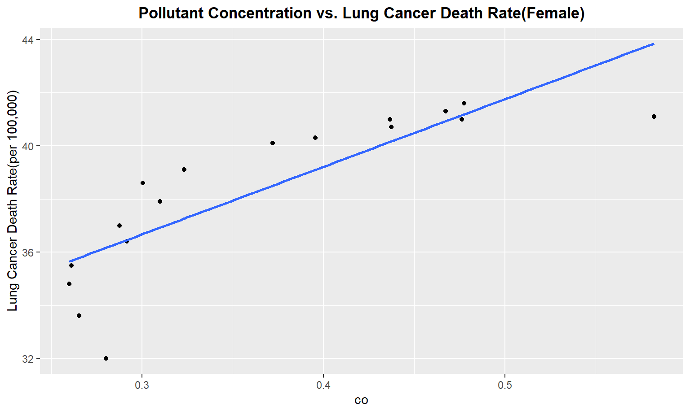
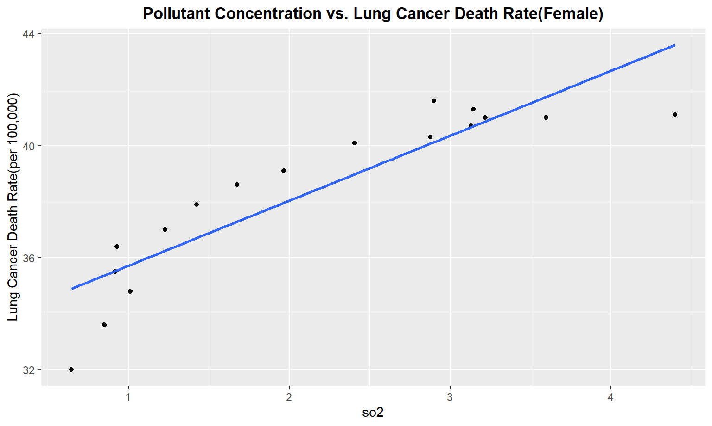
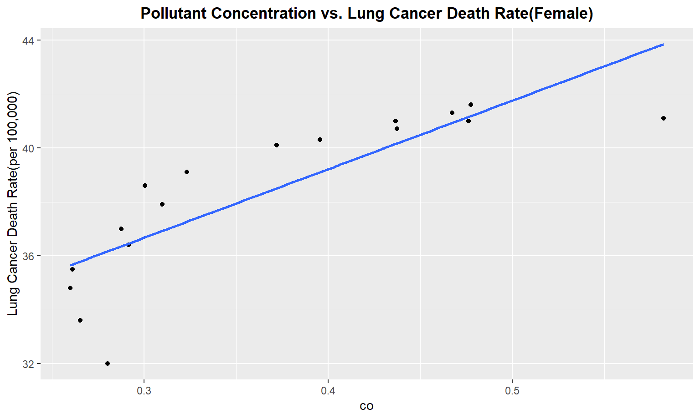

Exploratory Analysis
To understand the pulltion-related factors that act upon cancer incidence and death, we obtained, cleaned, and analyzed pollution data that spanned from 2000-2016. This data contained concentrations from the known pollutants NO2, O3, SO2, and CO.
Exploring Pollution Data Set
In the first table below, you can see the average concentrations of each pollutant in question in the United States for each year over the 17-year span.
modified_pollution =
read_csv("data/uspollution_us_2000_2016.csv") %>%
janitor::clean_names() %>%
select(state, date_local, no2_mean, o3_mean,
so2_mean, co_mean) %>%
rename(
no2 = no2_mean,
co = co_mean,
o3 = o3_mean,
so2 = so2_mean
) %>%
separate(date_local, into = c("year", "month", "day"), sep = "\\-") %>%
select(-c("month", "day")) %>%
group_by(year, state) %>%
summarize(across(everything(), mean)) %>%
mutate_if(is.numeric, ~round(., 3)) %>%
filter(state != "Country Of Mexico") %>%
group_by(year) %>%
summarize(across(everything(), mean)) %>%
select(-c(state)) %>%
mutate(
year = as.numeric(year)
)
modified_pollution %>%
mutate_if(is.numeric, ~round(., 3)) %>%
rename("no2 (ppb)" = "no2", "o3 (ppm)" = "o3", "so2 (ppb)" = "so2", "co (ppm)" = "co") %>%
knitr::kable(caption = "United States Pollutant Concentration from 2000-2016")| year | no2 (ppb) | o3 (ppm) | so2 (ppb) | co (ppm) |
|---|---|---|---|---|
| 2000 | 17.323 | 0.025 | 4.396 | 0.582 |
| 2001 | 17.670 | 0.026 | 3.598 | 0.476 |
| 2002 | 15.537 | 0.028 | 2.899 | 0.477 |
| 2003 | 14.555 | 0.027 | 3.144 | 0.467 |
| 2004 | 14.945 | 0.024 | 3.219 | 0.437 |
| 2005 | 15.297 | 0.026 | 3.129 | 0.437 |
| 2006 | 13.284 | 0.026 | 2.877 | 0.396 |
| 2007 | 12.208 | 0.026 | 2.407 | 0.372 |
| 2008 | 10.844 | 0.026 | 1.967 | 0.323 |
| 2009 | 9.917 | 0.026 | 1.674 | 0.300 |
| 2010 | 10.668 | 0.027 | 1.424 | 0.310 |
| 2011 | 10.972 | 0.027 | 1.229 | 0.288 |
| 2012 | 10.446 | 0.028 | 0.931 | 0.292 |
| 2013 | 10.188 | 0.026 | 0.917 | 0.261 |
| 2014 | 9.591 | 0.026 | 1.011 | 0.260 |
| 2015 | 9.253 | 0.026 | 0.851 | 0.265 |
| 2016 | 10.988 | 0.026 | 0.646 | 0.280 |
Below, we have included another data frame with the means across the entire 17-year span.
modified_pollution %>%
pivot_longer(
no2:co,
names_to = "pollutant_type",
values_to = "concentration"
) %>%
mutate(measurement = case_when(
pollutant_type %in% c("no2", "so2") ~ "ppb",
pollutant_type %in% c("co", "o3") ~ "ppm")) %>%
group_by(pollutant_type, measurement) %>%
summarize(
mean_concentration = mean(concentration),
median_concentration = median(concentration),
sd_concentration = sd(concentration)) %>%
arrange(measurement) %>%
knitr::kable(digits = 3)| pollutant_type | measurement | mean_concentration | median_concentration | sd_concentration |
|---|---|---|---|---|
| no2 | ppb | 12.570 | 10.988 | 2.782 |
| so2 | ppb | 2.136 | 1.967 | 1.153 |
| co | ppm | 0.366 | 0.323 | 0.098 |
| o3 | ppm | 0.026 | 0.026 | 0.001 |
Comparing Distributions of Pollutant Concentrations
To compare the distributions of the pollutants to each other, we created a series of boxplots. As you can see, NO2 has the highest average concentration of any of the pollutants in ppm, and also has a skewed-right shape. CO and O3 have much narrowers distributions (in addition to much lower mean concentrations), making their shape harder to discern. SO2, however, appears to be approximately normally distributed.
ppb_plot =
modified_pollution %>%
pivot_longer(
no2:co,
names_to = "pollutant_type",
values_to = "concentration"
) %>%
group_by(pollutant_type) %>%
filter(pollutant_type %in% c("no2", "so2")) %>%
ggplot(aes(x = pollutant_type, y = concentration)) +
geom_boxplot() +
labs(
x = "Pollutant Type",
y = "Concentration (ppb)",) + theme_bw()
ppm_plot =
modified_pollution %>%
pivot_longer(
no2:co,
names_to = "pollutant_type",
values_to = "concentration"
) %>%
group_by(pollutant_type) %>%
filter(pollutant_type %in% c("o3", "co")) %>%
ggplot(aes(x = pollutant_type, y = concentration)) +
geom_boxplot() +
labs(
x = "Pollutant Type",
y = "Concentration (ppm)",) + theme_bw()
ppb_plot + ppm_plot + plot_annotation(title =
"Distribution of Concentration Values for each Pollutant Type")
The next plot we created shows the pollution concentration with respect to time. This plot reveals that while NO2 and SO2 have been decreasing in concentration in recent years, that CO and O3 have remained relatively stable.
ppm_point =
modified_pollution %>%
pivot_longer(
no2:co,
names_to = "pollutant_type",
values_to = "concentration"
) %>%
filter(pollutant_type %in% c("o3", "co")) %>%
ggplot(aes(x = year,y = concentration, group = pollutant_type, color = pollutant_type)) +
geom_point() +
geom_line() +
scale_color_viridis(discrete = TRUE) +
theme_bw() +
labs(
title = "",
x = "Year",
y = "Pollutant Concentration(ppm)"
)
ppb_point =
modified_pollution %>%
pivot_longer(
no2:co,
names_to = "pollutant_type",
values_to = "concentration"
) %>%
filter(pollutant_type %in% c("no2", "so2")) %>%
ggplot(aes(x = year,y = concentration, group = pollutant_type, color = pollutant_type)) +
geom_point() +
geom_line() +
scale_color_viridis(discrete = TRUE) +
theme_bw() +
labs(
title = "",
x = "Year",
y = "Pollutant Concentration(ppb)"
)
ppb_point / ppm_point + plot_annotation(title =
"Trends in Polluntant Concentration in the US from 2000-2016")
Exploring Lung Cancer Data
Exploring Incidence of Lung Cancer
Here, an interactive map of the US that shows incidence rate of lung/bronchus cancer by state is at the bottom of this page, and gives a visualization of regional incidence trends. From this, it can be seen that southern states and northern midwest states have the highest incidence rates of lung and bronchus cancers. Kentucky had the highest incidence of lung and bronchus cancer in 2013-2017 and Utah had the lowest incidence rate.
g = list(
scope = 'usa',
projection = list(type = 'albers usa'),
showlakes = TRUE,
lakecolor = toRGB('white')
)
inc_state =
read_excel("data/IncRate.xlsx", sheet = "State",
skip = 6) %>%
janitor::clean_names() %>%
separate(
col = breast_both_sexes_combined,
into = c("breast_total", "female_breast_only"),
sep = "-"
) %>%
mutate(
breast_male = if_else(breast_male == "n/a", "0", breast_male),
cervix_male = if_else(cervix_male == "n/a", "0", cervix_male),
colon_excluding_rectum_both_sexes_combined =
if_else(colon_excluding_rectum_both_sexes_combined == "n/a", "0",
colon_excluding_rectum_both_sexes_combined),
colon_excluding_rectum_female = if_else(colon_excluding_rectum_female == "n/a", "0",
colon_excluding_rectum_female),
colon_excluding_rectum_male = if_else(colon_excluding_rectum_male == "n/a", "0",
colon_excluding_rectum_male)) %>%
filter(state != "Puerto Rico")
inc_state %>%
select(state, lung_and_bronchus_both_sexes_combined) %>%
mutate(code = state.abb[match(state, state.name)],
lung_and_bronchus_both_sexes_combined = as.numeric(lung_and_bronchus_both_sexes_combined)) %>%
filter(code != is.na(code)) %>%
relocate(state, code) %>%
plot_geo(., locationmode = 'USA-states') %>%
add_trace(
z = ~lung_and_bronchus_both_sexes_combined, text = ~state, locations = ~code,
color = ~lung_and_bronchus_both_sexes_combined, colors = 'viridis'
) %>%
colorbar(title = "Incidence Rate per 100,000") %>%
layout(
title = "Distribution of Lung/Bronchus Cancer Incidence Rate by State in 2013-2017",
geo = g
)Note. The raw data for incidence rate of cancer by cancer type did not include data point for Nevada in the combined national rates. Original data recommends referring to publications and sources page on American Cancer Society website
Exploring Mortality of Lung Cancer
Similarly, the interactive map of the mortality rate from lung and bronchus cancer in 2013-2017 shows comparable distribution across the states as the incidence rate.
g = list(
scope = 'usa',
projection = list(type = 'albers usa'),
showlakes = TRUE,
lakecolor = toRGB('white')
)
death_state =
read_excel("data/DeathRate.xlsx", sheet = "State",
skip = 6) %>%
janitor::clean_names() %>%
separate(
col = breast_both_sexes_combined,
into = c("breast_total", "female_breast_only"),
sep = "-"
) %>%
select(-female_breast_only) %>%
mutate(
breast_male = if_else(breast_male == "n/a", "0", breast_male),
cervix_male = if_else(cervix_male == "n/a", "0", cervix_male),
) %>%
mutate_at(vars(-("state")), as.numeric) %>%
filter(state != "Puerto Rico")
death_state %>%
select(state, lung_and_bronchus_both_sexes_combined) %>%
mutate(code = state.abb[match(state, state.name)],
lung_and_bronchus_both_sexes_combined = as.numeric(lung_and_bronchus_both_sexes_combined)) %>%
filter(code != is.na(code)) %>%
relocate(state, code) %>%
plot_geo(., locationmode = 'USA-states') %>%
add_trace(
z = ~lung_and_bronchus_both_sexes_combined, text = ~state, locations = ~code,
color = ~lung_and_bronchus_both_sexes_combined, colors = 'viridis'
) %>%
colorbar(title = "Mortality Rate per 100,000") %>%
layout(
title = "Distribution of Lung/Bronchus Cancer Mortality Rate by State in 2013-2017",
geo = g
)Exploring Trends in Death From Lung Cancer
read_death_time =
read_excel("data/DeathTrend.xlsx",
skip = 6) %>%
janitor::clean_names()
x = c("colorectum_female", "colorectum_male", "liver_and_intrahepatic_bile_duct_female",
"liver_and_intrahepatic_bile_duct_male", "lung_and_bronchus_female",
"lung_and_bronchus_male", "ovary_female", "uterus_cervix_and_corpus_combined_female")
remove_note = function(column_name) {
read_death_time = read_death_time %>%
separate(column_name, into = c(column_name, "note"), sep = "\\-") %>%
select(-note)}
for (i in x) {
read_death_time = remove_note(i)}
death_time =
read_death_time %>%
filter(year %in% 2000:2016) %>%
select(-c("breast_male", "ovary_male", "prostate_female",
"uterus_cervix_and_corpus_combined_male")) %>%
mutate_at(vars(-("year")), as.numeric) %>%
mutate(
year = as.numeric(year)
)Following plot shows the death trend in lung cancer over the same period of time as the previous plot of pollutants. As can be seen, lung cancer has sharply decreased from 2000-2016, which is similar to the trend we see in NO2 and SO2.
death_time %>%
rename(
male = lung_and_bronchus_male,
female = lung_and_bronchus_female
) %>%
pivot_longer(
female:male,
names_to = "gender",
values_to = "death_rate"
) %>%
ggplot(aes(x = year,y = death_rate, group = gender, color = gender)) +
geom_point() +
geom_line() +
labs(
title = "Trend in US Death rate from Lung Cancer, 2000-2016",
x = "Year",
y = "Lung Cancer Death Rate(per 100,000)"
)
Exploring relationship between trend in death rate from Lung Cancer to Pollution Concentration
After analyzing pollutants and lung cancer mortality/incidence on their own, we combined the pollution data with our data on cancer death and incidence in order to draw conclusions on the correlative effects pollutants have on cancer.
The next series of plots compares the pollutant concentration to the lung cancer death rate, statifying by gender. 6 of the 8 plots show a positive, linear relationship between the pollutant concentration and death rate. The 2 plots are the exception are both for O3, which shows a negative, linear relationship with death rate.
merged_death_pollution =
merge(death_time, modified_pollution, by = "year")
pollutant_variables =
merged_death_pollution %>%
select(no2,o3,so2,co) %>%
colnames() %>%
as.vector()Create a for loop to plot Pollutant concentration vs. Lung Cancer Death Rate
Male
pollutant_variables =
pollutant_variables %>%
as.list()
for (i in pollutant_variables) {
plot =
ggplot(merged_death_pollution, aes_string(i, "lung_and_bronchus_male")) +
geom_point() +
geom_smooth(method = lm, se = FALSE) +
labs(title = "Pollutant Concentration vs. Lung Cancer Death Rate(Male)",
y = "Lung Cancer Death Rate(per 100,000)") +
theme(plot.title = element_text(hjust = 0.5, face = "bold"))
print(plot)
}
Female
for (i in pollutant_variables) {
plot =
ggplot(merged_death_pollution, aes_string(i, "lung_and_bronchus_female")) +
geom_point() +
geom_smooth(method = lm, se = FALSE) +
labs(title = "Pollutant Concentration vs. Lung Cancer Death Rate(Female)",
y = "Lung Cancer Death Rate(per 100,000)") +
theme(plot.title = element_text(hjust = 0.5, face = "bold"))
print(plot)
}
 
